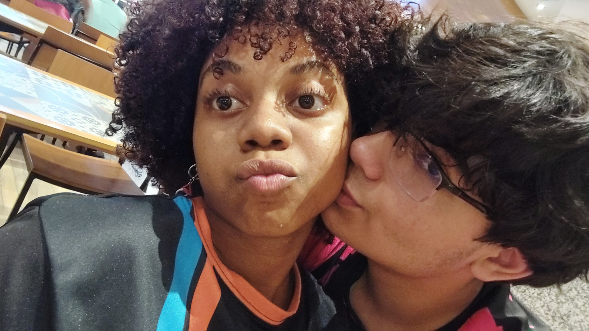

OIIII AMORRR, FELIZ DOIS ANOS DE NAMOROOOOO! Olha, vou ser bem sincero, eu tava querendo fazer um textão imenso pra você, te contando tudo que eu sinto, mas preferi fazer desse estilo diferente! Fiz uma linha do tempo da gente, e gostaria que você viesse comigo e lembrasse esses momentos! E muito obrigado por todos esses momentos que já passamos juntos! Amo ter você como namorada. Mas enfim, dá uma olhada aí embaixo que tem muita coisa legal ali!!
Você lembra dessas fotos? Nem parece que elas foram tiradas há 3 anos, quando a gente tinha acabado de entrar no Sesi — você era do 1D e eu do 1C. Lembro como se fosse ontem, quando a gente ficava conversando na biblioteca ou jogando Mudae. Eram momentos tão bons, que eu realmente amei passar com você. Cada um desses momentos está guardado no meu coração.
Primeiramente aqui na parte roxa! Quando a gente se conheceu e começou a conversar, lembro como se fosse ontem todos esses momentos que vieram na minha cabeça enquanto eu estou escrevendo isso, lembro de várias memórias, fofocas, roles, e outra coisas que viemos nessa epoca, inclusive a nossa primeira conversa, nosso primeiro abraço, nosso primeiro beijo, todos esses momentos ficam guardados no meu coração com todo o carinho do mundo. Quero agradeçer muito sobre tudo que a gente passou junto nessa epoca, sério mesmo, tem coisas que só de lembrar já me dá um sorriso imenso no rosto.
Quero te lembrar o quanto você é bonita amor, nessas fotos eu fiquei apenas vendo você por um bom tempo, pensando o quão linda, charmosa, elegante, boa de escolher looks, inteligente, lider, cheirosa, criativa, artista, fofa, aventureira e magnifica que você é, amo seu sorriso, seus olhos, sua boca, seu cabelo, cada pedacinho seu eu amo muito amor e eles estão dentro do meu coração, EU AMO VOCÊ MUITAOOOO 😍😍😍.
Agora, na parte Verde! queria resaltar esses momentos que a gente tem e como amo eles, nossos dates que a gente ia, nossos encontros depois da escola no plaza ou aos sábados no center, quando a gente ia ver um filme só a gente ou só ia passear no shopping, quando eu inventava de querer pegar aqueles bichinhos na maquina de caça niquel, quando a gente entrava em um monte de loja de roupa e só olhava, quando a gente também ia comer algo diferente, como um podrão ou algo mais elegante como aquela doceria do urso, esses momentos que passei que você deixam meu coração quentinho, amo ter esses momentos com você amor, com que eu posso passar o tempo de maneira tão divertida com você, onde a gente pode descobrir e descobre muitas coisas novas e criar diversos momentos entre só a gente.
Uma coisa que eu tenho que te falar é como você deixou o meu ensino médio e minha vida mais divertida isabelly, de verdade, cada bobeira que a gente fazia junto, cada momento que a gente tirava pra se zoar, jogar, ficar em call um bom tempo só conversando sobre um monte de coisa. Quero que você saiba que eu sorri na minha MUITO MAIS nesse meio tempo por causa de você amor. Eu te amo muito mesmo.
E agora, na parte amarela!! como disse ai em cima, eu amo muito suas brincadeiras, suas piadas que fazia entre a gente e principalmente a zoação, você me mostrou uma nova visão da vida de uma maneira muito mais leve do que a que eu tinha em mente, mas sempre sabendo que nem tudo é zoação e que tem momentos que precisamos ser sérios! mas quero te lembrar que da mesma maneira que você me faz sorrir tanto que nem um bobo, seja pelas suas atitudes ou por alguma mania engraçada (dab), quero que você sorria amor, quero que você se divirta e se sinta bem.
Quero te agradeçer por todos esses dois anos amor, por todo esse carinho que você teve por mim nesse tempo e em acreditar no meu melhor, obrigado por todos os momentos em que estavamos felizes juntos, por todo dia que a gente ia no técnico e zoavamos nós mesmo, obrigado também por me ajudar ao meu senso de moda que é muito ruim KKKKKKKKK, obrigado também por me mostrar que a vida pode ser tão legal, tão divertida e maneira com uma pessoa tão especial ao seu lado, tanto que eu mal consigo escrever todos os nossos momentos e felicidades de tantos que eram, tantas vezes que vi você sorrindo e meu coração esquentou tanto, obrigado por tudo meu bem, meu amor, minha donzela, minha princesa, minha camisa 10 e minha namorada, quero continuar e seguir essa vida ao seu lado, EU TE AMO MUITO AMOR, MUITOOOOOOOOOOOOOOOO 💓💞💓💘💔💝❤️🔥❤️🔥💘💝💗💝💔💔💞💓💔💔❤️🔥💝💝💘
